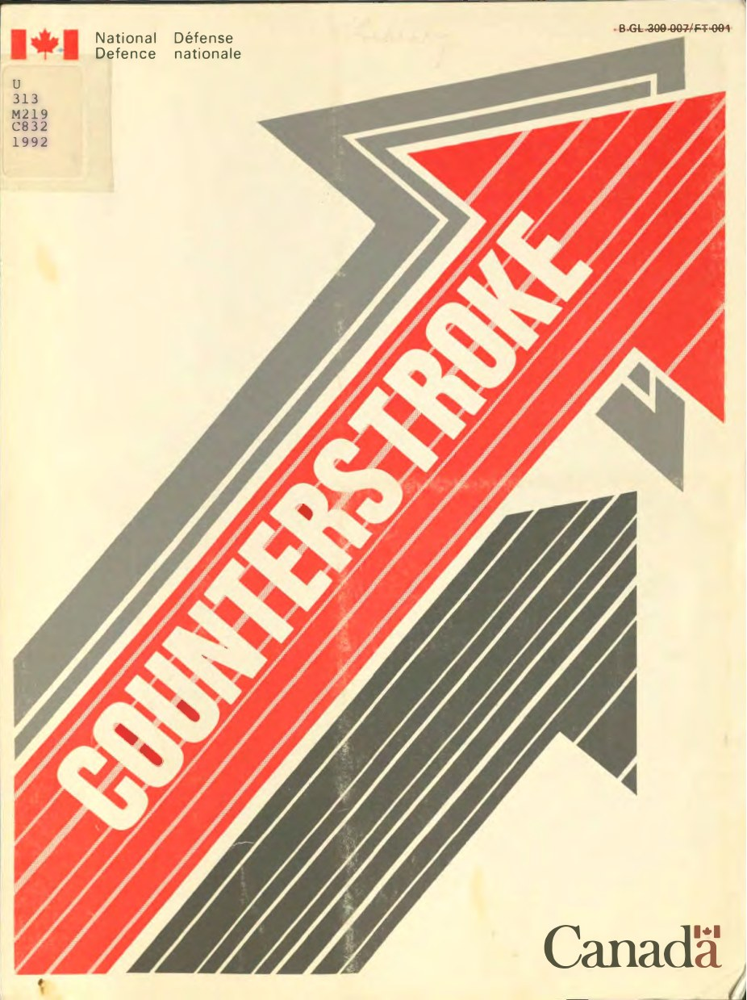

The Counterstroke
Kenneth Macksey
The Counterstroke is a narrative wargame that Kenneth Macksey wrote for the Canadian Army around 1990 (B-GL-309-007/FT-001), and it follows a fictional 7 Canadian Mechanized Brigade Group in Bavaria as it moves from a week of defensive fighting to a counter-attack against Soviet-style “Fantasian” forces.
The story runs from the warning order and the orders groups through the covering force battle, a hasty attack and then a deliberate crossing of the Schwarzach River, the breakout and a chemical attack, and ends in the pursuit, and it is told through the commanders and soldiers on both sides. It is the successor to Macksey’s First Clash, and each chapter closes with a page of lessons learned, so the book can be read as a story and also used to teach how a brigade plans and fights an attack.
The book is also available as a PDF (7 by 10 inches, about 17 MB). The original scan is on canada.ca.